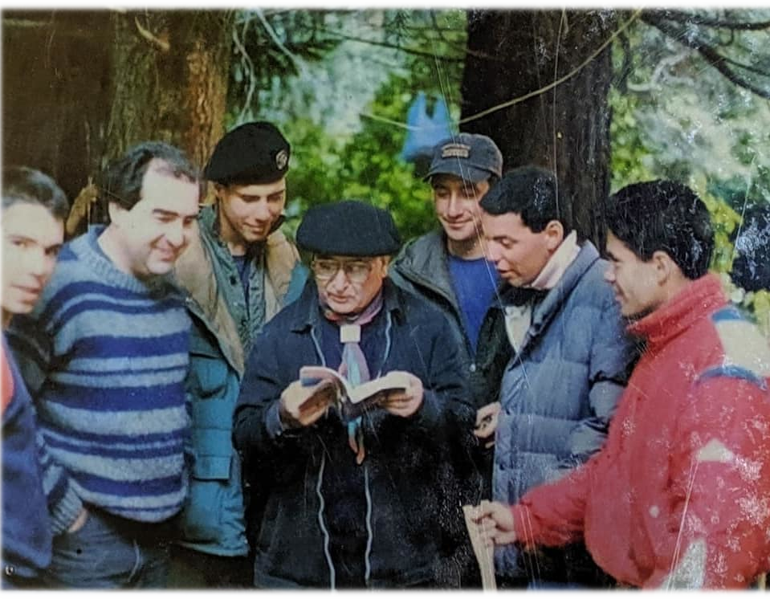

“Trata de dejar a este mundo en mejores condiciones de como lo encontraste.”
Robert Baden-Powell


Cada acción que realizamos tiene un impacto, ya sea grande o pequeño, en el mundo que nos rodea. Desde 1938 el G.S.Sagrado Corazón tiene su puerta abierta para que niños compartan juegos y aventuras.
Al final del sábado, intentamos dejar un legado positivo para las generaciones futuras, asegurándonos de que el mundo que dejamos atrás es mejor que el que encontramos.

Líder del mes de ...
Nombre:
Email: